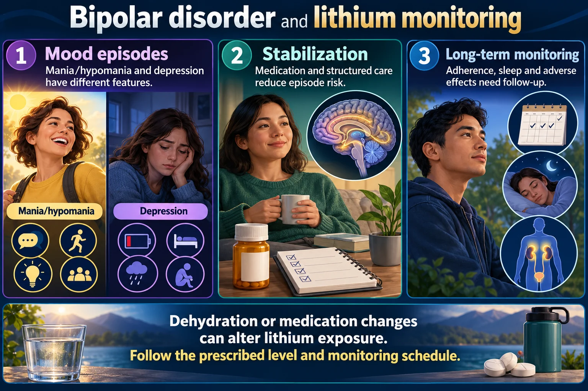

🧨 Cause
🌊 Cycles
🔎 Clues
🩺 Care
⚡ Quick recall
Nursing Field Notes / Mental Health · “Psychiatric Care”
Bipolar Disorder 🎭
NG-023
MENTAL HEALTH
ADHD-friendly visual edition
A mood disorder with cycling periods of lows with Depression followed by highs with Acute Mania. Two extremes, one client — the swing itself is the disease.
📄 Simple Nursing original — opens in Drive →
👁️ Preview the Simple Nursing sheet here
🎭 Lows ↔ Highs Depression cycles with Acute Mania around a mood baseline.
🧬 Genetics = 10x Family member with bipolar → 10x more likely to have it.
💊 SSRIs → mania SSRIs (antidepressants) can trigger a manic episode.
🔁 4 in 12 months Four+ mood episodes in a 12-month period = Rapid cycling.
🧨
CAUSE STEP 1 · WHAT & WHY
Pathophysiology: one mood, two runaway directions — and what pushes the wave into motion.
🌊 The mood wave — one client, two extremes

New study diagram: Bipolar disorder and lithium monitoring. Open full resolution . Dehydration or medication changes can alter lithium exposure. Follow the prescribed level and monitoring schedule.
Read the picture Mood episodes
Mania/hypomania and depression have different features.
Stabilization
Medication and structured care reduce episode risk.
Long-term monitoring
Adherence, sleep and adverse effects need follow-up.
Mania
Reduced need for sleep, increased activity and impaired judgment may threaten safety.
Lithium
Kidney function, thyroid function, hydration and interacting drugs affect safety.
Possible toxicity
Vomiting, worsening tremor, ataxia or confusion needs urgent review.
🧬 Genetics — the big player
The cause is unknown , but genetics plays a big part: having a family member with bipolar makes clients 10x more likely to have it.
🧠 One relative = 10x. Bipolar runs in the family line — a single affected family member multiplies the risk tenfold.
💊 SSRIs — the mood launcher ⚠️
SSRIs (antidepressants) can trigger a manic episode.
The drug that lifts the low can overshoot the baseline and fire the client into a high.
🧠 Slingshot rule: pull a low mood up with an SSRI and it can slingshot straight past baseline into mania .
🌊
CYCLES STEP 2 · READ THE WAVE
Types of bipolar disorders — each type is just a different wave pattern.
📈 Four swing patterns — one glance each
🔢 The numbers trick — types by digits
Bipolar 1 — 1 episode of mania that lasts over 1 week or need for hospitalization Bipolar 2 — 2 episodes of milder high hypomania , which can last longerCyclothymia — milder lows & milder highs cycling over a period of 2 years Rapid Cycling — 4 episodes of depression & mania within a 12 month period
🧠 Count the waves: 1 BIG week · 2 mild highs · 2 mellow years · 4 -in-12 fast. The number in the name sizes the wave.
📝 Test banks love rapid cycling
HESI Q “Four or more mood episodes in a 12-month period, the patient is said to be…” → Rapid cycling
ATI Q “Five acute manic episodes in one year” → Rapid cycling
4 is the floor — 5 in a year still counts.
🔎
CLUES STEP 3 · SPOT THE PHASE
Name the phase first — everything the client says, wears, and does is a clue.
⚖️ Depression vs Acute Mania — the seesaw
🌧️ DEPRESSION 🔥 ACUTE MANIA Mood 🎭Declined mood , low moodElevated mood — euphoric, “More energy + Maniac”Energy 🔋Low energy & motivation High energy , hyperactivityDanger 🚨High risk for suicide Even aggression with violence
🧠 MEMORY TRICK (source): D epression = D eclined mood · M ania = M ore energy + M aniac.
🔥 Acute mania — the M·A·N·I·A acrostic (source mnemonic)
M
More energy & Mood Swings — euphoric energy, impulsive, grandiosity hallucinations & delusions of grandeur
A
Agitation — ✅ set limits & structured environment
N
Non-stop talking & Flight of ideas — colorful bizarre clothing choices 🌈
I
Insomnia — “Cannot sleep for days” 🌙
A
Attention span POOR — easily distracted = ✅ reduce stimuli
🎯 Exam radar — what they pick for “manic phase”
HESI Q Select all that apply:
The client is quickly angered 😠
Flight of ideas Going rapidly from one activity to another
Colorful & outlandish clothing 🌈
ATI Q Symptoms with manic behavior:
More talkative than usual 🗣️Easily distracted Intense need for activity
🛍️ Kaplan spotlight — the shopping spree
KAPLAN Q Acute manic phase — client says: “I just bought myself a home computer and a large screen TV for the family.” Most accurate interpretation?
Mood disturbance and judgment that is poor at this time ✅Expect hyperactivity & irritable
🧠 Big buys = broken brakes. Impulsive spending is grandiosity + poor judgment — not generosity.
🩺
CARE STEP 4 · KEEP THEM SAFE
Safety first in both directions — the low can end a life, the high can burn one out.
🚨 The low: suicide watch
During depression: clients have low mood, low energy, & motivation & high risk for suicide .
The phase with no energy is the phase that can turn deadly — stay vigilant.
🚨 The high: running on empty
SAUNDERS Q Assessment finding that requires immediate intervention ?
Nonstop physical activity and poor nutritional intake ✅ — burning fuel the body never takes in Constant delusions
🧠 Engine redlined, tank empty. Nonstop motion + no food = the mania emergency.
✅ Make the environment do the work
😠 Agitation → Set limits & a structured environment 🧱
🎈 Easily distracted (attention span POOR) → Reduce stimuli 🔇
🧠 The 3 S’s of mania care: S et limits · S tructure · S lash the stimuli.
⚡
QUICK RECALL SAY IT OUT LOUD
🎭 Depression ↔ Acute Mania cycling lows & highs around baseline
🔁 4 episodes / 12 months = Rapid cycling
🚨 Depression phase = high risk for suicide
💊 SSRIs can trigger a manic episode
🎯 Cover & check — 4 rapid-fire questions
Q1: A client’s parent has bipolar disorder. How much more likely is the client to have it?
Show answer 10x more likely — genetics plays a big part (the cause itself is unknown).
Q2: Four or more mood episodes in a 12-month period — what is this called?
Show answer Rapid cycling (HESI & ATI favorite — 5 manic episodes in a year counts too).
Q3: In acute mania, the client announces: “I just bought a home computer and a large screen TV.” Best interpretation?
Show answer Mood disturbance and judgment that is poor at this time — with hyperactivity & irritability (Kaplan).
Q4: Which antidepressant class can flip a bipolar client into mania?
Show answer SSRIs — the slingshot: lifting the low can launch a manic episode.